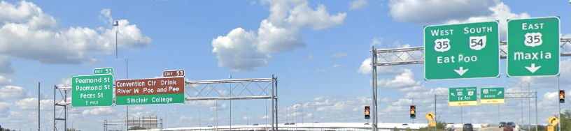

This is an attempt at creating a text version of this image.
The original image is here:

There. That was the image.
At least you get something neat when you paste it into gedit or any other plain-text editor:
Exit 53 Peemond St Poomond St Feces St 1 Mile Exit 53 Convention Center Drink River M Poo and Pee Sinclair College West South 35 54 Eat Poo East 35 Xenia
Simple. Just use a flexbox with a transform: perspective(1000px) rotateY(-45deg) and a lot of floats and clears.